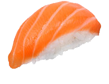
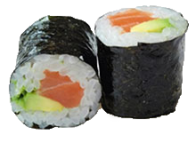
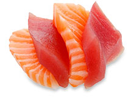
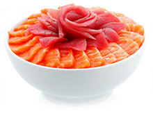
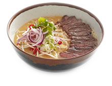
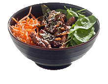
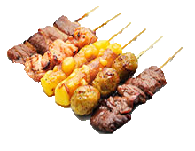
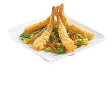

C'est un plat japonais composé d'un riz vinaigré appelé shari combiné avec un autre ingrédient appelé neta qui est souvent du poisson cru ou des fruits de mer. Les types de sushi les plus courants sont les nigirizushi, constitués d'une boule de shari formée à la main avec d'une tranche de neta, les makizushi qui sont des rouleaux de nori renfermant du shari et d'autres ingrédients ou encore le chirashizushi composé de shari recouvert de divers mets.
C'est une spécialité culinaire japonaise se présentant sous la forme d'un rouleau d'algue nori séchée entourant du riz blanc mélangé à du vinaigre de riz sucré, et farci par divers aliments, en particulier du poisson cru ou des plantes. Comme les autres sushis, on le trempe dans de la sauce de soja salée, mélangée à de la pâte de wasabi (une racine proche de la moutarde), lors de sa consommation. Il est très proche de son cousin de Corée, le gimbap.
C'est un mets traditionnel de la gastronomie japonaise, attesté dès le XVe siècle, composé de tranches de poisson cru. Le mot sashimi est un terme japonais francisé signifiant littéralement « corps taillé ». Il se caractérise par une présentation artistique et esthétique savante de la taille d'une bouchée. Hors du Japon et alors qu'il ne contient pas du tout de riz, le sashimi est parfois confondu à tort avec le sushi, une préparation à base de riz vinaigré.
C'est un sushi dit « éparpillé ». Contrairement à beaucoup d'autres sushis, ce n'est pas un plat assemblé mais un simple bol de riz assaisonné au vinaigre sur lequel sont déposées des garnitures froides. Les ingrédients sont principalement des produits de la mer et des légumes, mais sont souvent plus variés que ceux des autres sushi, et suivant les régions peuvent être crus, marinés, saumurés ou encore cuits, et mélangés ou non au riz ...
Les ramens sont un mets japonais constitué de pâtes importé de Chine au début du XXe siècle. Ces nouilles étaient alors communément appelés « soba chinois » ou « soba de Nankin », ce qui fait qu'on les appelle aussi très souvent soba de nos jours. Elles sont servies dans un grand bol de bouillon parfumé au miso ou à la sauce soja et peuvent être accompagnées, selon la recette proposée, de légumes, de viande (assez souvent de porc) et d'autres aliments additionnels.
C'est un plat traditionnel japonais composé d'un bol de riz sur lequel on dispose des garnitures chaudes qui lui donnent son nom final : katsudon avec porc pané, gyu-don avec lamelles de boeuf, unagidon avec anguilles grillées, oyakodon avec poulet et oeufs, kimuchidon avec Kimchi coréen, tendon avec tenpura. Par sa facilité de réalisation et la variété qu'il autorise, le donburi est très répandu et chacun peut créer sa variante (dite "pa-sonaru-don").
En japonais, yakitori signifie littéralement « oiseau grillé ». Le terme désigne donc des brochettes souvent de petite taille, dont chaque morceau a environ la taille d'une bouchée, cuites sur un gril puis parfois enrobées d'une sauce sucrée ou salée. Traditionnellement, elles sont à base de poulet, mais on peut en trouver au poisson, aux fruits de mer au porc, au boeuf, à l'asperge, au poivron, au champignon ou toutes sortes de légumes et même à la fausse viande pour les personnes végétariennes.
C'est un assortiment de beignets à la fois très savoureux et très digeste (une des rares fritures à basses calories), populaire au Japon depuis le XVIIe siècle avec son introduction par des missionnaires jésuites portugais. Ces beignets consistent en une pâte à frire fluide classique, à base de farine, de jaune d'oeuf et d'eau glacée, dans laquelle on trempe toutes sortes de produits: poisson, fruits de mer, légumes coupés ou en lamelles, shiso, etc.